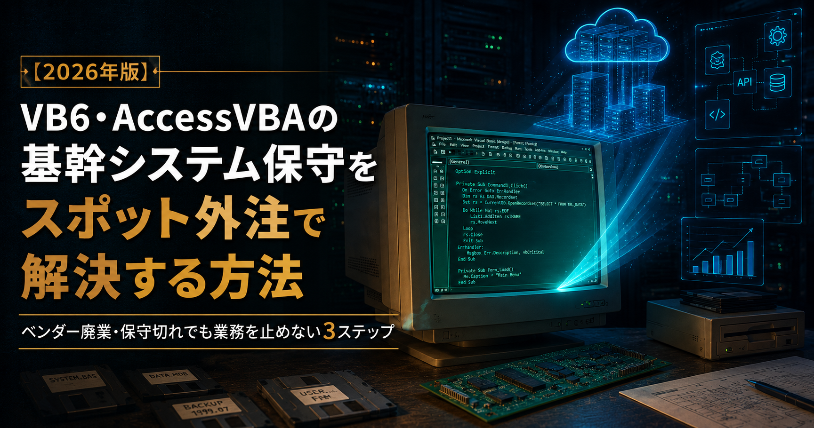
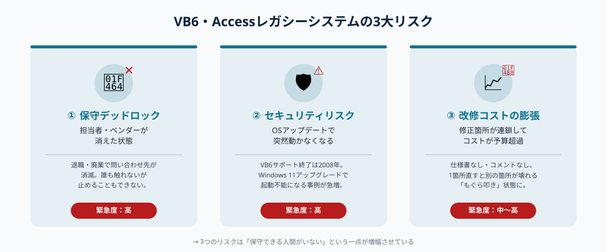
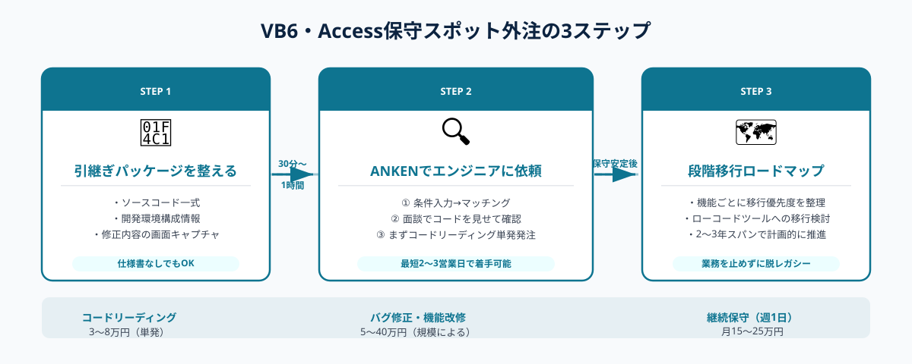

VB6・AccessVBAの基幹システム保守をスポット外注で解決する方法｜ベンダー廃業・保守切れでも業務を止めない3ステップ
VB6・AccessVBAで動く古い基幹システムの保守・改修方法の答えは「ソースコードと環境構成を整えたうえで、VB6保守経験のあるスポットエンジニアに単発で依頼すること」だ。開発元の廃業や担当者の退職で対応が途絶えたケースでも、月10〜30万円のスポット費用でバグ修正・機能改修・帳票追加を継続できる。本記事では3ステップで解決方法を解説する。
本記事は2026年8月時点の情報に基づいています。
まず相談だけでも大丈夫です。
ANKENではVB6・AccessVBA・VB.NETの保守経験を持つスポットエンジニアをご紹介できます。ソースコードを見せながら「この修正ができるか」を確認してから発注できます。相談・見積もりは無料。しつこい営業は一切ありません。
無料で相談する →レガシー基幹システムが抱える3つのリスク

VB6・AccessVBAで動く基幹システムは、日本の中小製造業・卸売業・運輸業を中心に今なお数多く現役稼働している。しかし、時間の経過とともに3つのリスクが深刻化していく。
① 保守デッドロック：担当者もベンダーも消えた
VB6が開発のピークだった1998〜2006年頃に構築されたシステムは、当時を知る担当エンジニアが定年退職・転職・廃業によっていなくなり、「誰も触れないが止めることもできない」状態に陥りやすい。特に中小企業では社内で唯一の開発者に依存していたケースが多く、その人物の退職後に問い合わせ先が消滅するパターンが後を絶たない。
② セキュリティリスクの蓄積
MicrosoftはVisual Basic 6.0の延長サポートを2008年4月に終了した。以降、OSアップデートとの非互換・セキュリティパッチ未適用リスクが毎年積み上がっている。Windows 11へのアップグレードに伴い「VB6アプリが起動しなくなった」という相談が近年急増している。
③ 属人化による改修コストの膨張
仕様書なし・コメントなし・テストコードなしの状態で長年継ぎ足し開発されたVB6・Accessシステムは、「どこを修正すればよいかわからない」という状態になっていることが多い。一箇所を直せば別の箇所が壊れる「もぐら叩き」状態になり、修正コストが見積もりの2〜3倍に膨らむリスクがある。
よく聞く「今すぐ止められない理由」：「このシステムが止まったら受注も出荷もできなくなる」「20年分のデータが入っていてリプレイスすると移行コストだけで数百万かかる」「代替システムの選定が進まないまま時間が経つ」——いずれも現実的な事情であり、スポット外注での保守継続は「全面移行するまでのつなぎ」として最も現実的な選択肢だ。
この3つのリスクを「保守できる人間がいない」という一点が増幅させている。逆に言えば、VB6保守経験のあるエンジニアにアクセスできれば、当面のリスクを一気に軽減できる。
STEP 1｜引継ぎパッケージを整える
スポット外注に依頼する前に、まず「依頼できる状態」を整える作業が必要だ。この段階を省略してしまうと、スポットエンジニアが着手できるまでのリードタイムが大幅に延び、緊急修正でも2〜3週間以上かかってしまう。必要なのは以下の3点だ。
① ソースコード一式をまとめる
VB6プロジェクトの場合は「.vbp（プロジェクトファイル）」と「.frm/.cls/.bas」の全ファイルを1フォルダにまとめる。Accessの場合は「.accdb/.mdb」本体と、リンクテーブルの接続先情報を記録したメモを添付する。バージョン管理ツール（Git等）がなくても、フォルダ単位で圧縮しておくだけで十分だ。
② 開発・実行環境の構成情報を記録する
「どのPCでアプリが動いているか」「OSのバージョン」「Accessのバージョン（2010/2016/2019等）」「リンクしているDBサーバーやファイルサーバーのパス」を書き出す。この情報がないと、スポットエンジニアが手元で動作確認できる環境を作るのに時間を取られる。
③ 依頼したい修正内容を「画面キャプチャ＋文章」で伝える
仕様書がなくてもよい。「この画面で集計ボタンを押すとエラーになる（スクリーンショット添付）」「この帳票に新しい列を追加したい（手書きでもよいのでイメージを添付）」という形で修正内容を視覚的に伝えるだけで、経験豊富なVB6エンジニアには十分伝わる。
STEP 1は30分〜1時間程度で完了できる作業だ。この準備ができていれば、ANKENでのマッチング後に最短2〜3営業日で着手できる。
STEP 2｜ANKENでVB6保守経験のあるスポットエンジニアに依頼する

STEP 1で引継ぎパッケージが整ったら、実際に発注する段階に移る。ANKENでは以下の手順でVB6・Accessの保守経験者を探すことができる。
① ANKENに依頼内容を登録する
「言語：VB6 / Access VBA」「修正内容：〇〇のバグ修正・帳票追加等」「稼働形態：スポット（1〜3日）または週1日継続」「対応期限：〇〇まで」の4点を入力する。業種（製造業・卸売業等）と既存システムの概要も添えると、より実務に近い経験を持つエンジニアにマッチングしやすくなる。
② 面談でソースコードを見せながら対応可能かを確認する
VB6保守の発注で最も重要なのが「このコードを読める人か」の事前確認だ。面談ではSTEP 1で整えたソースコードの一部を共有し、「このエラーの原因はどこにあると思いますか」と問いかけてみる。即座に見当をつけられるエンジニアは実務経験がある。見当がつかない場合は別の候補者を選ぶことをおすすめする。
③ まず「コードリーディング＋見積もり」を単発で発注する
修正が複数箇所にわたる場合や、ソースコードが複雑に絡み合っている場合は、まず「半日〜1日のコードリーディング」として単発発注し、エンジニアに実際のソースコードを読ませたうえで修正見積もりを出してもらうことを強く推奨する。この段階のコストは3〜5万円程度だが、後続の修正費用の想定外膨張を防ぐための最も確実な手段だ。
④ 修正完了後は「テスト手順書」を成果物に含める
バグ修正・機能追加が完了したら、「何をどう確認すれば正常に動作しているか」をまとめたテスト手順書の作成を成果物に含めるよう発注仕様に明記する。次の修正時や別のエンジニアへの引継ぎ時に、この手順書が動作確認の基準になる。
STEP 3｜段階的な移行ロードマップで脱レガシーに備える
スポット外注での保守体制が安定したら、次のステップとして「いつまでにどの機能からクラウド・モダン環境に移行するか」のロードマップを策定する。全機能の一括移行は現実的なリスクが高すぎるため、段階移行が基本方針だ。
① 機能ごとに「移行優先度」を仕分ける
VB6・Accessシステムの全機能を洗い出し、「業務影響が小さく・利用頻度が低い」機能から移行する順番を決める。たとえば「帳票出力だけをExcel自動化やkintoneに移す」「マスタ管理画面だけをGoogle Sheetsに移す」など、サブ機能単位の移行から始めると既存業務を止めずに進められる。
② 移行先を「スクラッチ開発」ではなく「ローコード」で検討する
VB6システムの後継をゼロからスクラッチ開発すると、規模によっては500〜2,000万円の開発費がかかる。一方、kintone・Microsoft Power Apps・Bubble等のローコードツールを使えば、受発注管理・在庫管理・勤怠集計といった定型的な業務機能を100〜300万円規模で構築できるケースが多い。スポットエンジニアにローコードツールの選定だけを依頼（1〜3日・10〜30万円）することも現実的な選択肢だ。
③ 移行計画は「2〜3年スパン」で考える
VB6システムの現場移行は「動き続けている間に少しずつ替える」が原則だ。焦って一括移行しようとすると現場が混乱し、後戻りにさらにコストがかかる。スポットエンジニアに「現在の保守を継続しながら並行して移行先の開発を進める」形で関与してもらい、「どこかのタイミングで切替える」目標を設定する。
費用相場と発注時の注意点
VB6・Access保守のスポット外注費用相場（2026年版）
スポット単価はエンジニアの経験年数・対応可能言語・案件の複雑度によって幅があるが、以下が目安だ。
- コードリーディング・見積もり（半日〜1日）：3〜8万円
- 軽微なバグ修正（1〜2日）：5〜15万円
- 帳票追加・画面改修（3〜5日）：15〜40万円
- 月次の保守継続（週1日）：月15〜25万円
発注時の3つの注意点
① 「VB6経験あり」の実績を必ず確認する
「Windowsアプリ開発経験あり」とプロフィールに書いてあっても、VB6特有の仕様（フォームの構造・コントロールイベント・COM連携）に慣れていないエンジニアが混在する。面談で「直近のVB6案件はいつですか」「VB6で一番難しかった対応は何でしたか」を必ず確認する。
② NDAと秘密保持の取り決めを先に行う
基幹システムには顧客情報・売上データ・在庫情報が含まれることが多い。スポット外注でソースコードを共有する前に、秘密保持契約（NDA）を締結しておく。ANKENでは基本的なNDAのひな形を用意しており、面談前に締結することを推奨している。
③ 修正後の動作確認は必ず発注側で行う
スポットエンジニアが開発環境での動作確認を終えた後、本番環境での最終確認は発注側（または発注側が指名する担当者）が行う体制を作る。「エンジニアが動作確認してくれるはず」と任せきりにすると、本番でのデータや環境差異によるトラブルが見落とされるリスクがある。
よくある質問
- Q. VB6の保守ができるエンジニアはまだいますか？
- A. はい、存在します。VB6は2008年にMicrosoftのサポートが終了しましたが、製造業・物流・小売業などでは現役稼働しているシステムが多く、保守経験を持つエンジニアが一定数います。フリーランス市場でも探すことができ、ANKENでもVB6・VB.NET・Access VBAの保守経験者をご紹介できます。
- Q. ソースコードはあるが仕様書がない場合でも依頼できますか？
- A. はい、依頼できます。レガシーシステムの多くは仕様書が失われているケースが多く、経験豊富なVB6エンジニアはソースコードから仕様を読み解くことに慣れています。まず「コードリーディング（半日〜1日）」として単発で依頼し、費用感を確かめてから本修正に移るのがおすすめです。
- Q. 保守だけでなく新機能の追加もスポット外注できますか？
- A. はい、可能です。VB6・Accessシステムへの帳票追加・データ連携機能の追加・入力フォームの改修もスポット外注で対応できます。ただし、追加機能の規模が大きい場合はVB6の延命より一部機能の新システム移行を選ぶほうがトータルコストを抑えられるケースもあります。スポットエンジニアに相談しながら判断することをおすすめします。
まとめ
VB6・AccessVBAの基幹システム保守をスポット外注で解決するための3ステップをまとめる。
STEP 1：ソースコード一式・開発環境構成・修正内容の画面キャプチャを1フォルダにまとめる「引継ぎパッケージ」を整える。仕様書がなくてもよい。この準備があればスポット外注を最短2〜3営業日で着手できる。
STEP 2：ANKENでVB6・Access VBAの保守経験者を探し、面談でソースコードを見せながら対応可能を確認してから発注する。複雑な案件は「コードリーディング単発」から始めると修正費用の見積もり精度が上がる。
STEP 3：保守が安定したら、スポットエンジニアと一緒に段階移行ロードマップを策定する。全機能の一括移行ではなく、業務影響が小さい機能からローコードツールに切り替えていくのが最もリスクが低い。
「まず費用感だけ確認したい」「ソースコードをエンジニアに見せて判断してほしい」という段階でも相談を受け付けている。ANKENでは初回相談・見積もりを無料で対応している。
VB6・AccessVBAの基幹システム保守をスポット外注で相談する（無料）
VB6・VB.NET・Access VBAの保守経験を持つスポットエンジニアをご紹介します。コードリーディングだけの単発依頼から、継続保守まで対応可能です。初回相談・見積もりは完全無料です。
無料で相談・見積もりを依頼する →